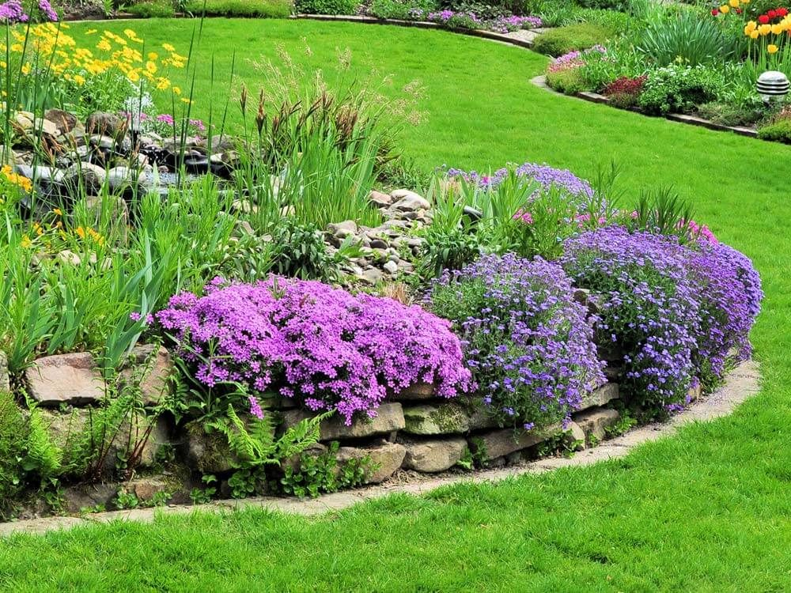
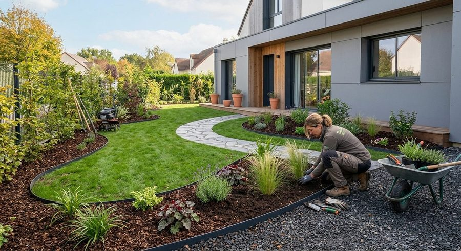
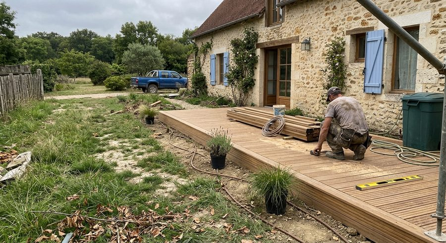
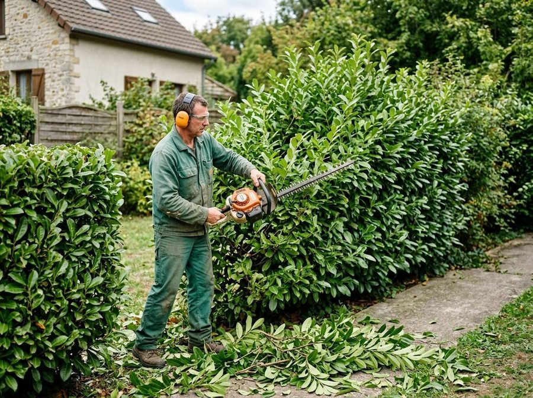
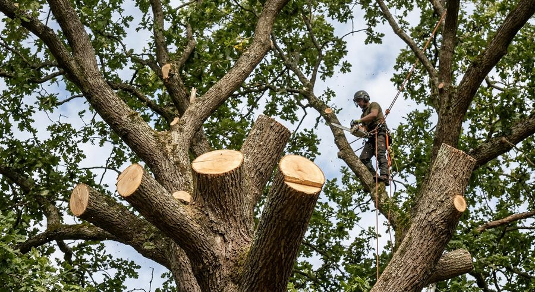
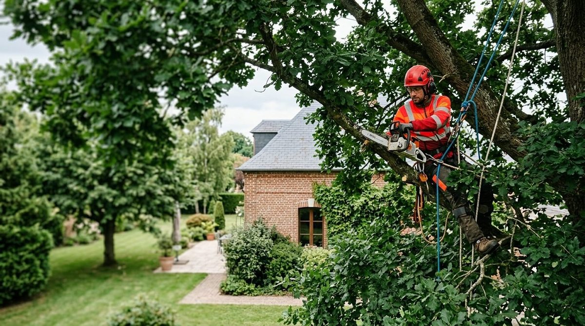

Nous cultivons votre bien-être
Création, aménagement et entretien de votre jardin, élagage de vos arbres : Arbor’Escience prend en charge vos projets de A à Z, avec un service de proximité dans l’ouest de l’Île-de-France.
- Particuliers
- Copropriétés
- Entreprises
- Lun. au sam.
Un jardin qui vous ressemble, un arbre qui dure
Basée à Orgeval, dans les Yvelines, Arbor’Escience met son savoir-faire et sa polyvalence au service de tous vos projets d’aménagement extérieur, de la création à l’entretien de votre jardin, en passant par l’élagage.
Chaque jardin est unique : nous proposons des solutions sur mesure, adaptées à vos besoins et aux particularités de votre environnement.
- ProximitéUn interlocuteur local, qui se déplace chez vous.
- FiabilitéDes réalisations abouties aux finitions soignées.
- RéactivitéUne réponse rapide à chaque demande.

Tout pour votre jardin, sous un même toit
Cinq savoir-faire complémentaires, pour transformer votre espace vert ou en préserver la beauté et la santé.

Création
Coloré, épuré, méditerranéen, champêtre… nous définissons ensemble votre projet, avec plan et esquisse pour vous projeter.
En savoir plus
Aménagement
Plantations, terrasses en bois, arrosage automatique, petites maçonneries, clôtures et éclairage extérieur.
En savoir plus
Entretien
Interventions régulières, ponctuelles ou contrat annuel : des formules personnalisées tout au long de l’année.
En savoir plus
Élagage et abattage
Taille « douce » respectueuse de l’arbre ; abattage et démontage lorsque c’est nécessaire.
En savoir plus
Coaching
Conseils et accompagnement pour prendre en main votre jardin : plantation, choix des essences, taille d’un arbuste.
En savoir plus
Maîtrisez la croissance et l’esthétique de vos arbres
En milieu urbain, un arbre peut cohabiter difficilement avec le bâti, présenter des risques de rupture ou être atteint de maladies. Nous privilégions des solutions raisonnées, respectueuses de son architecture et de sa biologie.
- Travaux de taille
- Travaux d’abattage
- Démontage, si l’abattage direct est impossible
- Installation de hauban
- Rognage de souche
Dans l’ouest de l’Île-de-France
Nous nous déplaçons principalement autour d’Orgeval, notamment à :
- Poissy
- Chambourcy
- Villennes-sur-Seine
- Saint-Germain-en-Laye
- Saint-Nom-la-Bretèche
- Morainvilliers
- Feucherolles
- Versailles
- Plaisir
- Maisons-Laffitte
- Rueil-Malmaison
- Les Mureaux
- et bien d’autres
Horaires d’ouverture
- Lundi au vendredi
- 8h00 – 19h00
- Samedi
- 8h00 – 17h00
Camélia Sasanqua : un arbuste à floraison automnale, au feuillage persistant et au parfum délicat, qui illumine massifs et terrasses jusqu’en hiver.
Parlons de votre jardin
Décrivez-nous votre projet : nous nous déplaçons sur place pour définir avec vous la solution qui vous correspond.